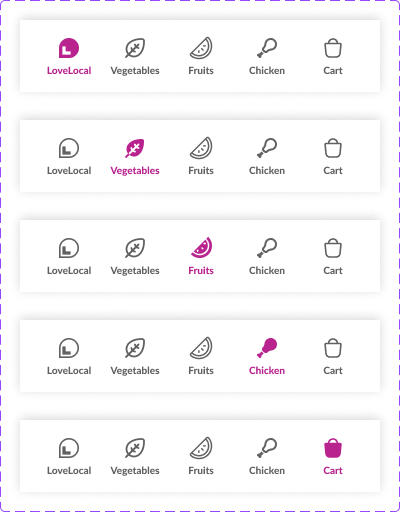
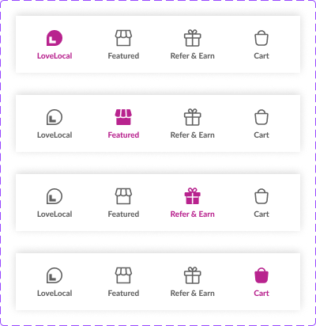
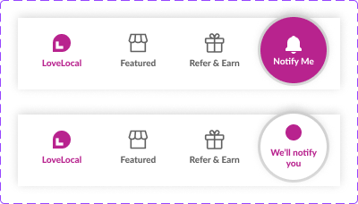
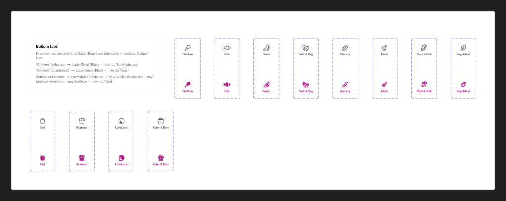

Components
Bottom Tab Bar
The app's primary bottom navigation — Home, Shop, Coins, Offers/Refer and Account — using the tab* icon set (see Icons) with nav-tab-icon-selected / nav-tab-label-selected applied to the active tab.
States
Captured directly from Nuclear v2.0's Navigation page in Figma. This component doesn't yet have its own HTML/CSS build-out — these are the reference states to build against.




Specs — tokens used
| Role | Token | Value |
|---|---|---|
| Bar surface | nav-bottom-bg | #ffffff |
| Selected icon | nav-tab-icon-selected | #b8238e |
| Selected label | nav-tab-label-selected | #b8238e |
| Unselected icon / label | content-secondary | #616161 |
| Cart badge (count) | icon: tabcartcount | brand-colored, not tokenized |
Usage guidelines
Do keep exactly one tab in the selected state at a time; swap the cart icon for tabcartcount only when the cart is non-empty.
Don't change the tab order between screens — the empty-state and shop-subtype variants reorder content inside a tab's own icon, not the tab positions themselves.